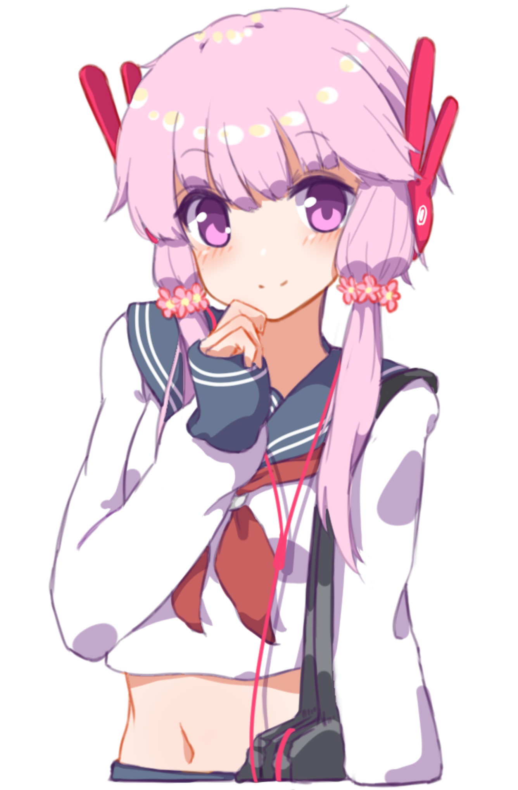

유즈키 유카리(結月ゆかり)는 VOCALOMAKETS의 기획을 통해 AH-Software가 개발한 VOCALOID3, VOCALOID4 대응 소프트웨어이자 VOICEROID+ 대응 소프트웨어, 그리고 이 둘의 이미지 캐릭터다. 디자인 컨셉은 토끼이며 메인 컬러는 연보라색과 검정색.유즈키 유카리(結月ゆかり)라는 이름은 'VOCALOID와 인연(ゆかり)이 있는 사람들이 소리(月)를 잇는다(結ぶ)'[2]라는 문장에서 유래되었으며 영어로는 'She unites you all with her voice'라고 되어 있다.

AH-Software의 VOCALOID답게 목소리의 재현도는 상당히 높으나 정말 사람이 내는 목소리 같다며 호불호가 갈렸다. 리얼리티가 높은 목소리를 좋아하는 사람들은 큰 기대를 가졌지만 VOCALOID 특유의 기계음과 개성적인 음색을 좋아했던 사람들은 개성이 없는 VOCALOID는 VOCALOID로서의 의미를 상실한 것이라며 비판받기도 했다. 성숙한 목소리다 보니 기존의 VOCALOID인 메구리네 루카나 GUMI, 혹은 VY1와 목소리가 비슷하다는 소리도 들었다. 그러나 개중엔 탁하고 목넘김이 있는 목소리가 현실적인 동급생이나 여학생 같은 느낌이라며 호평하는 사람도 있었고 VOCALOMAKETS의 첫 기획이라 기대하는 사람도 적지 않았다.